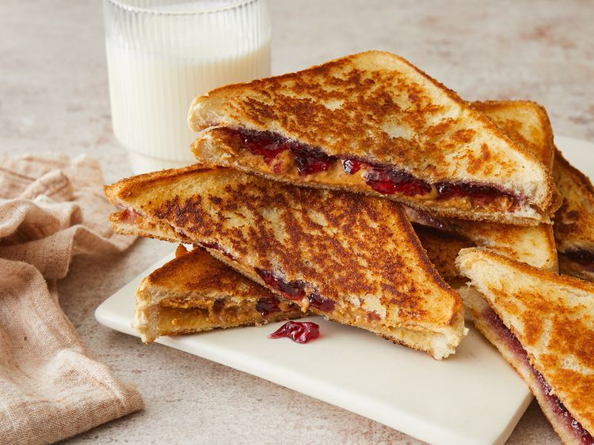

Peanut Butter and Jelly Sandwich
Which one is harder, the cereal or this sandwich?

You will need the following:
- White bread
- Butter
- Any flavored jelly
- Any peanut butter
Follow the next steps and you should be all good to go!
- Heat a griddle or skillet to 350 degrees F (175 degrees C).
- Spread butter on one side of each slice of bread. Spread jelly on the unbuttered side of one slice of bread; spread peanut butter on the other unbuttered side.
- Place bread slices together, so peanut butter and jelly are in the middle.
- Cook on the preheated griddle until golden brown and heated through, about 4 minutes per side.
- Enjoy!
Home